Ribbons
Ribbons is the game that I made with a group of six for INFO 3152 at Cornell University Spring semester 2014. I was lead visual designer, so almost everything in the game, besides a few programmatically generated objects, was hand drawn by me in PaintTool SAI. That semester we won the class award for Most Innovative Game. The game is a puzzle platformer where you are the Seamstress - a mystical girl who can control the Ribbons that flow through the Ribbon Kingdom. Prince Beau has gone missing,and it is the Seamstress' job to find him. Travel through four worlds to find the Prince, and navigate deadly Miasma and hazardous Seed Shooters. This game was one of the best experiences: I loved working on small team and creating something wonderful.
Ribbons on GDIACConcept Art
To create the Seamstress, I went through various iterations costumes and designs. I eventually settled on a bright orange jumpsuit to convey both her position as a hard-working seamstress and to help with the brightness and fun of the Ribbon Kingdom. One of the goals of the visual design was to convey the color and whimsical land that we had set the game into. My early sketches were my journey to find that sense of place and convey it.
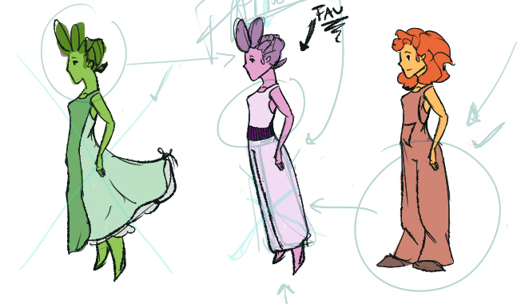Above are some early iterations of the Seamstress' outfit. Many color schemes were tested. Orange was the brightest, and made her stand out from any of the backgrounds. In the end, the Seamstress' outfit was an amalgam of a very outfits.
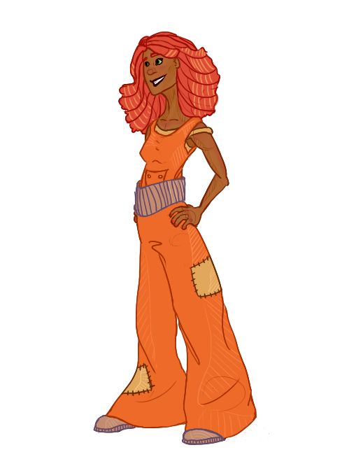One of the Seamstess' final concepts. The only part of her appearance changed after this was her hair. To make it easier to animate, I decided to put her hair in a braid.
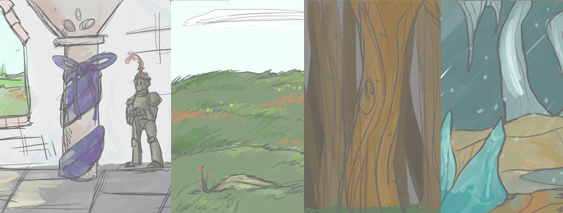Above are the concept sketches for the backgrounds of the Ribbon Kingdom. Colors were tested against the Seamstess. After these tests, I realized that the colors were too light to be used. It was important that through the Seamstress' adventures that the player experienced many different lands since I wanted the game to feel larger than it was. Conveying this bright world was a challenge, since the protagonist could easily be lost in the color.
Animations
Animations were a crucial part of making this puzzle platformer come to life. This was my first time animating, and I used a combination of Photoshop Elements 10 and PaintTool SAI. The Seamstress had three animations: idle, running, and landing. For other actions, like falling, a sprite was used. Animations took roughly three hours to complete.
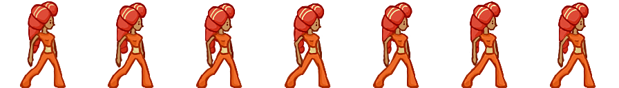Idle Animation
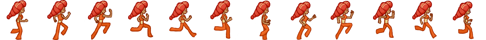
Running Animation
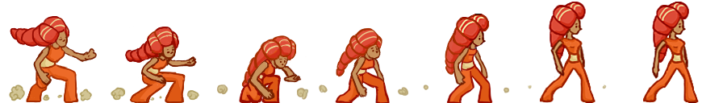
Landing Animation
Backgrounds
Backgrounds were all drawn in PaintTool SAI, and each background took around 4 hours to complete. In Ribbons, the parallax effect was important for creating a more ‘realistic’ feel for the world, so each layer of the backgrounds is its own individual image. Combined they create a more three dimensional world. The levels in order are the Ribbon Castle, the Grassy Meadows, the Haunted Forest and the Ice Caves.
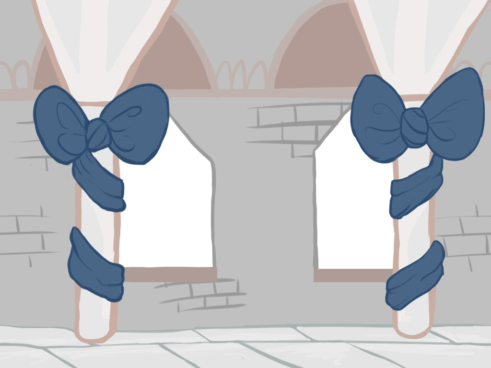The Ribbon Castle
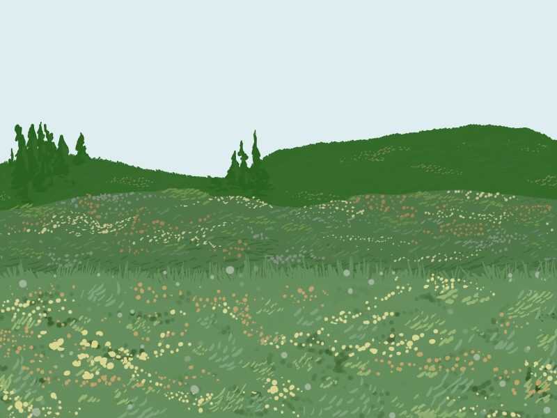
The Grassy Meadows
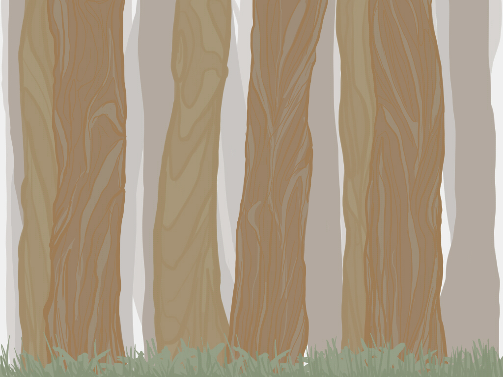
The Haunted Forest
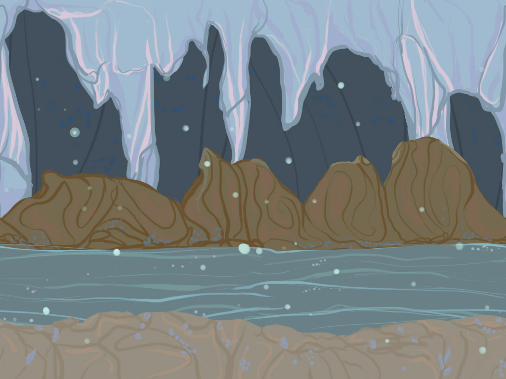
The Ice Caves
Objects
The objects in Ribbons really tied the world together. There were many types of blocks that the player could interact with to try to get to the level exit, such as the telescoping blocks that expanded when upside down and collapses when right side up, or the hook blocks that allowed the Seamstress to pass over or stand on top. The objects in the world created a dynamic environment that the player could edit using the Ribbon. Even some of the characters got caught in the fun.
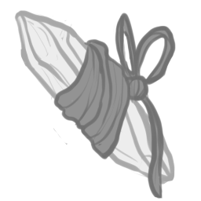Gems
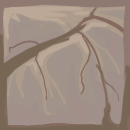
A Simple Block from the Meadows
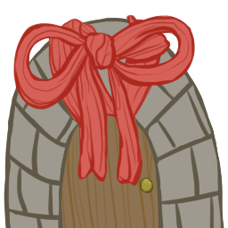
The Exit Doors

Prince Beau